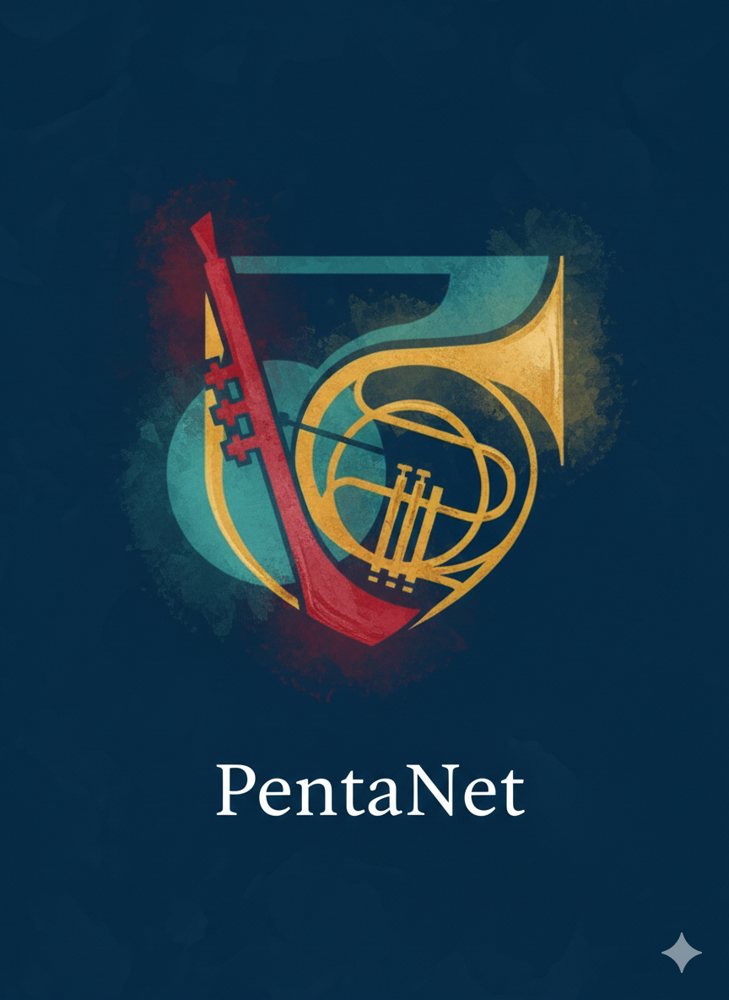

PentaNet — Plataforma de Gestión Académica
Aplicación full-stack para centros educativos con Flutter y Spring Boot.
PentaNet es una solución integral que centraliza la vida académica. Incluye control de roles (admin, profesor, alumno y secretaria), gestión de horarios, sistema de reserva de aulas en tiempo real, mensajería interna y expedientes académicos. Backend robusto con Spring Boot y frontend multiplataforma con Flutter.